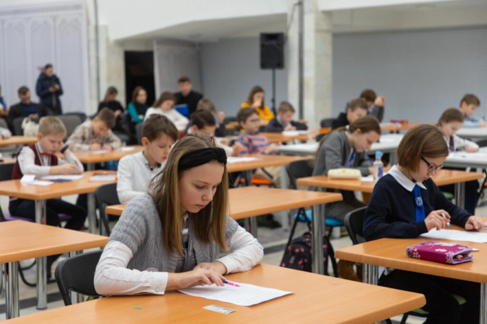

Экономика – это нескучно. Как прошел городской конкурс финансовой грамотности среди школьников
01.02.2023
Минский государственный дворец детей и молодежи
Инспекция МНС по Минску и Ассоциация налогоплательщиков Беларуси
Финал ежегодного городского конкурса «Занимательная экономика» состоялся 1 февраля в столичном Дворце детей и молодежи. Организаторы, в числе которых инспекция МНС по Минску и Ассоциация налогоплательщиков Беларуси, подготовили для учащихся 4–5-х классов столичных гимназий и школ интеллектуальные испытания, позволяющие ребятам проверить свои знания по теме, сообщает корреспондент агентства «Минск-Новости».

В финале участникам пришлось непросто. Им предстояло ответить на вопросы финансового теста и разгадать экономический кроссворд. Но надо отдать должное ребятам, поскольку готовились они основательно как в школьных кружках по экономике, так и в кружках Ресурсного центра основ экономических знаний, финансовой грамотности и предприимчивости. Кстати, социальным партнером последнего стала ИМНС по Минску.